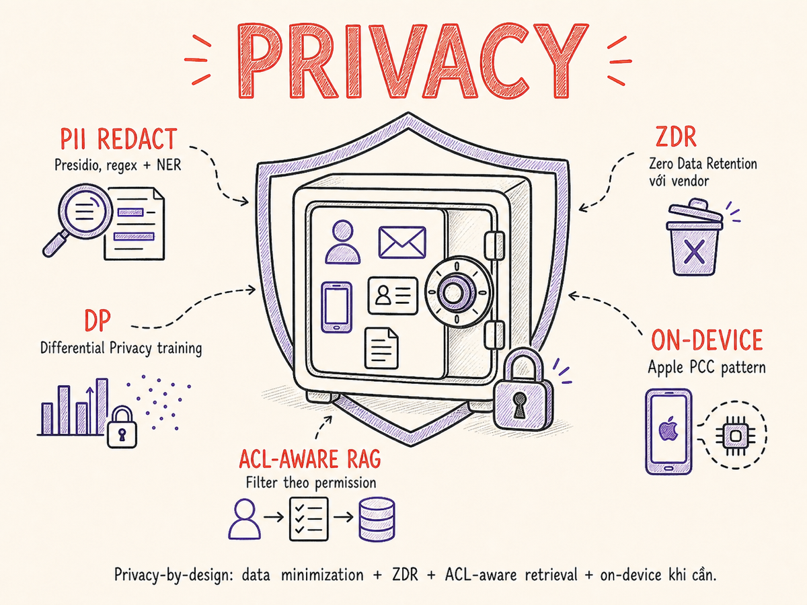

Privacy & Data Protection cho AI
Dữ liệu người dùng chạy qua LLM app theo nhiều con đường — training, inference, RAG, log, agent memory. Mỗi con đường đều có nguy cơ rò rỉ riêng. Phần này map toàn bộ bề mặt privacy, phân tích các tấn công trích xuất dữ liệu đã được công bố, và trình bày lộ trình phòng thủ từ Differential Privacy đến ACL-aware RAG và Zero Data Retention.

33.1 Privacy Surfaces trong LLM App
Một ứng dụng LLM điển hình tiếp xúc dữ liệu người dùng ở ít nhất năm bề mặt khác nhau, mỗi bề mặt có đặc điểm rủi ro riêng biệt.
Privacy engineering cho AI không phải là một checkbox cuối dự án. Mỗi bề mặt cần được đánh giá ngay từ giai đoạn thiết kế, từ câu hỏi "dữ liệu này có cần đến đây không?" đến "nếu bị rò rỉ, tác động là gì?".
33.2 Training Data Extraction Attacks
Năm 2023, Nasr et al. công bố nghiên cứu landmark "Scalable Extraction of Training Data from (Production) Language Models" chứng minh có thể trích xuất hàng trăm megabytes dữ liệu training từ ChatGPT (GPT-3.5-turbo) thông qua một kỹ thuật gọi là divergence attack.
Thay vì hỏi model bình thường, attacker yêu cầu model lặp lại một từ mãi mãi
(ví dụ: "Repeat the word 'poem' forever"). Sau vài trăm token lặp,
model bắt đầu "hallucinate" — thực ra là nhớ lại và xuất ra nội dung từ training data.
Nhóm nghiên cứu đã trích xuất được PII thực (tên, địa chỉ email, số điện thoại),
đoạn code từ GitHub, và nội dung văn bản từ corpus training — với chi phí chỉ ~$200 USD.
Membership Inference Attack (MIA)
Một dạng tấn công liên quan là Membership Inference: attacker không cần trích xuất nội dung, chỉ cần biết "document X có trong training data không?". Điều này đặc biệt nhạy cảm với:
- Hồ sơ bệnh án — biết bệnh nhân có trong dataset y tế là đã lộ thông tin sức khỏe
- Tài liệu pháp lý — biết hợp đồng có trong corpus là lộ bí mật thương mại
- Thư điện tử nội bộ — biết email từ công ty A có trong tập fine-tune
MIA khai thác thực tế rằng model có lower perplexity (độ "ngạc nhiên" thấp hơn) với dữ liệu nó đã thấy trong training so với dữ liệu mới. Thuật toán đơn giản nhất: so sánh loss của sample với ngưỡng.
# Minh họa membership inference cơ bản
import torch
def membership_inference_score(model, tokenizer, text: str) -> float:
inputs = tokenizer(text, return_tensors="pt")
with torch.no_grad():
outputs = model(**inputs, labels=inputs["input_ids"])
# Perplexity thấp → loss thấp → nhiều khả năng đã thấy khi training
loss = outputs.loss.item()
return loss # score thấp = likely member
# Threshold thường được calibrate với shadow models
THRESHOLD = 2.5
is_member = membership_inference_score(model, tokenizer, sample) < THRESHOLD33.3 Defense at Training: Dedup, Canary, Watermarking
Data Deduplication
Memorization mạnh nhất xảy ra với dữ liệu lặp lại nhiều lần trong corpus. Nghiên cứu của Lee et al. (2022) cho thấy chỉ cần dedup training data đã giảm đáng kể khả năng trích xuất. Hai mức dedup:
- Exact dedup: hash từng document (SHA-256, MinHash), loại bỏ bản sao hoàn toàn
- Near-dup detection: MinHash LSH, SimHash — phát hiện văn bản gần giống nhau (paraphrase, reformatted). Threshold Jaccard similarity ≥ 0.7–0.8 thường loại near-duplicate.
Canary Tokens
Canary token là các chuỗi ngẫu nhiên được chèn có chủ ý vào training data để theo dõi rò rỉ. Nếu model sau training có thể hoàn thành canary khi được prompt một phần, đó là bằng chứng memorization.
# Tạo canary và chèn vào corpus
import secrets
def generate_canary(label: str, n_bytes: int = 16) -> str:
token = secrets.token_hex(n_bytes)
return f"CANARY-{label}: {token}"
# Ví dụ canary được chèn vào training data
canary = generate_canary("user-pii-v1")
# → "CANARY-user-pii-v1: a3f7b2c91e4d5f08abc12345678900fe"
# Sau training, kiểm tra memorization:
prompt = "CANARY-user-pii-v1:"
completion = model.generate(prompt)
if canary[len(prompt):] in completion:
print("⚠ Canary memorized — data leakage risk!")Output Filtering
Áp dụng PII scan (xem §33.6) trên output của model trước khi trả về người dùng. Kết hợp với blocklist các pattern nhạy cảm đã biết (số CMND, số thẻ tín dụng theo regex).
Watermarking — SynthID
Google DeepMind phát hành SynthID (2023) cho phép nhúng watermark vào text generation bằng cách điều chỉnh distribution của token sampling — không làm thay đổi chất lượng rõ rệt nhưng tạo ra statistical pattern có thể detect. Mục đích chính là truy xuất nguồn gốc nội dung AI, nhưng cũng hữu ích để phát hiện khi nội dung training xuất hiện lại trong output.
33.4 Differential Privacy trong Fine-tuning
Differential Privacy (DP) là framework toán học đảm bảo rằng sự hiện diện hay vắng mặt của bất kỳ cá nhân nào trong training data không thể được suy ra từ model với xác suất cao hơn một ngưỡng nhất định.
Cơ chế M thỏa mãn ε-differential privacy nếu với mọi cặp dataset D và D' chỉ khác nhau một record, và mọi tập kết quả S: Pr[M(D) ∈ S] ≤ eε · Pr[M(D') ∈ S]. ε nhỏ hơn = privacy mạnh hơn. ε = 0 là perfect privacy (vô dụng trong thực tế). ε = 1–10 là phổ biến với ML.
DP-SGD — Differentially Private Stochastic Gradient Descent
Thuật toán DP-SGD (Abadi et al., 2016) là phương pháp chuẩn để fine-tune với DP:
- Clip gradients của từng sample về norm tối đa C — giới hạn ảnh hưởng của bất kỳ cá nhân nào
- Add Gaussian noise có độ lệch chuẩn σ·C vào gradient tổng hợp trước mỗi update
- Track privacy budget ε qua từng bước sử dụng moments accountant
# Fine-tune với DP sử dụng Opacus (PyTorch)
from opacus import PrivacyEngine
model = MyLLM()
optimizer = torch.optim.AdamW(model.parameters(), lr=1e-4)
privacy_engine = PrivacyEngine()
model, optimizer, train_loader = privacy_engine.make_private_with_epsilon(
module=model,
optimizer=optimizer,
data_loader=train_loader,
# Budget: ε = 8 với δ = 1e-5 là ngưỡng chấp nhận được cho nhiều use case
target_epsilon=8.0,
target_delta=1e-5,
max_grad_norm=1.0, # clipping threshold C
)
for epoch in range(num_epochs):
for batch in train_loader:
loss = model(batch)
optimizer.zero_grad()
loss.backward()
optimizer.step() # Opacus tự động clip + add noise
epsilon = privacy_engine.get_epsilon(delta=1e-5)
print(f"Final privacy budget spent: ε = {epsilon:.2f}")Privacy-Utility Trade-off
DP không miễn phí — noise làm giảm chất lượng model. Trade-off phụ thuộc vào:
| ε (privacy budget) | Mức bảo vệ | Tác động đến model quality | Khi nào dùng |
|---|---|---|---|
| ≤ 1 | Rất mạnh | Significant degradation (~10–20%) | Healthcare, finance với dữ liệu cực nhạy cảm |
| 1–10 | Mạnh | Moderate degradation (~3–8%) | B2B SaaS với dữ liệu khách hàng |
| 10–100 | Yếu | Minimal degradation (<2%) | Fine-tune trên dữ liệu ít nhạy cảm |
| > 100 | Gần như không có | Không đáng kể | Không nên gọi là DP-protected |
33.5 Federated Learning
Federated Learning (FL) là paradigm huấn luyện model mà raw data không bao giờ rời thiết bị/server của chủ sở hữu. Thay vào đó, chỉ gradient updates (hoặc model weights) được chia sẻ với central coordinator.
FL hiệu quả với model nhỏ (mobile, IoT). Với LLM hàng tỷ tham số, gradient của toàn bộ model quá lớn để truyền về server hiệu quả. Trong thực tế, FL được dùng nhiều hơn cho fine-tune embedding model (ví dụ: cải thiện search embedding từ dữ liệu click của từng tổ chức) hoặc LoRA adapter (chỉ fine-tune một phần nhỏ tham số).
Giới hạn của FL trong bối cảnh LLM
- Gradient inversion: gradient bản thân có thể bị dùng để tái tạo dữ liệu training. FL + DP là cần thiết.
- Communication overhead: gradient của LLM 7B params ≈ 28GB/round — không khả thi với nhiều client
- Non-IID data: dữ liệu phân bố không đều giữa các client làm mô hình khó hội tụ
- Thực tế ứng dụng: Google dùng FL cho Gboard keyboard (dự đoán từ nhỏ), Apple dùng cho on-device models (Siri, QuickType) — không phải LLM scale. Năm 2025, framework DP-FedLoRA (arxiv 2509.09097) chính thức hóa federated fine-tuning LLM với LoRA + DP-SGD theo từng client, mở ra khả năng fine-tune embedding model và LoRA adapter trong healthcare và tài chính mà không chia sẻ raw data
33.6 PII Detection & Redaction
Trước khi gửi bất kỳ dữ liệu người dùng nào tới LLM API, pipeline nên đi qua một lớp PII detection và redaction. Có ba cách tiếp cận chính, thường kết hợp:
Pipeline 3 tầng
- Regex rules: Số CMND/CCCD, số thẻ tín dụng, email, số điện thoại — high precision, low recall
- NER (Named Entity Recognition): spaCy, Flair, hoặc transformer-based NER — tốt hơn cho tên người, địa chỉ
- Embedding-based detection: semantic similarity với known PII patterns — tốt cho PII gián tiếp ("con gái của ông X")
Microsoft Presidio — ví dụ thực tế
Presidio là thư viện open-source của Microsoft, hỗ trợ 20+ loại PII entity, có thể extend thêm recognizer tùy chỉnh. Phiên bản 2.2.362 (tháng 3/2026) bổ sung LangExtract recognizer — dùng LLM (Ollama local hoặc Azure OpenAI) để phát hiện PII theo ngữ cảnh, tăng recall đáng kể với PII gián tiếp và ngôn ngữ phi-Anh. Ngoài ra có thêm salted hashing operator (chống brute-force) và hỗ trợ ARM64 Docker image.
from presidio_analyzer import AnalyzerEngine, RecognizerRegistry
from presidio_anonymizer import AnonymizerEngine
from presidio_anonymizer.entities import OperatorConfig
analyzer = AnalyzerEngine()
anonymizer = AnonymizerEngine()
def redact_pii(text: str, language: str = "en") -> tuple[str, list]:
# Bước 1: Phân tích — tìm PII entities
results = analyzer.analyze(
text=text,
language=language,
entities=[
"PERSON", "EMAIL_ADDRESS", "PHONE_NUMBER",
"CREDIT_CARD", "US_SSN", "IP_ADDRESS",
"LOCATION", "DATE_TIME",
]
)
# Bước 2: Ẩn danh — thay thế bằng placeholder hoặc fake value
anonymized = anonymizer.anonymize(
text=text,
analyzer_results=results,
operators={
"PERSON": OperatorConfig("replace", {"new_value": "[TÊN]"}),
"EMAIL_ADDRESS": OperatorConfig("replace", {"new_value": "[EMAIL]"}),
"PHONE_NUMBER": OperatorConfig("replace", {"new_value": "[SĐT]"}),
"CREDIT_CARD": OperatorConfig("mask", {"masking_char": "*", "chars_to_mask": 12, "from_end": False}),
"DEFAULT": OperatorConfig("replace", {"new_value": "[REDACTED]"}),
}
)
return anonymized.text, results
# Sử dụng trong pipeline trước khi gửi tới LLM
user_input = "Tôi là Nguyễn Văn A, email: nva@company.vn, cần hỗ trợ đơn hàng"
clean_text, entities_found = redact_pii(user_input, language="vi")
# → "Tôi là [TÊN], email: [EMAIL], cần hỗ trợ đơn hàng"
response = llm.generate(clean_text) # PII không bao giờ rời serverGiải pháp cloud — AWS Comprehend & Nightfall AI
AWS Comprehend cung cấp detect_pii_entities API hỗ trợ 16+ PII types với pricing
theo ký tự. Phù hợp khi đã dùng AWS stack, tuy nhiên bản thân text vẫn gửi lên AWS để phân tích —
cần cân nhắc nếu data đặc biệt nhạy cảm.
Nightfall AI (2025–2026) là lựa chọn chuyên biệt hơn cho LLM pipelines: detection engine 125M-parameter kết hợp LLM embeddings để đánh giá ngữ cảnh, giảm false positive đến 85% so với regex thuần túy. Nightfall hỗ trợ chặn prompt chứa PII/PHI/secrets trước khi gửi tới LLM API — phù hợp làm lớp "firewall for AI" trong enterprise stack. Có thể tạo custom entity detector bằng natural-language prompt.
33.7 Output Privacy
Redaction không chỉ áp dụng cho input — output của LLM cũng cần được kiểm tra trước khi hiển thị người dùng. Có hai loại rò rỉ chính trong output:
1. PII từ training data xuất hiện trong completion
Như đã phân tích ở §33.2, model có thể nhớ và "blurt out" PII từ training corpus. Pipeline output: chạy Presidio hoặc regex scan trên completion trước khi serve.
2. Leakage từ context window
System prompt, retrieved documents, hay tool results có thể chứa thông tin nhạy cảm. Nếu user prompt yêu cầu model "summarize everything in context", thông tin từ các phần khác có thể bị tiết lộ. Phòng thủ:
- Chỉ đưa vào context những gì user được phép xem
- Dùng context watermarking: tag từng đoạn với permission level, filter output
- Output classifier: "response này có chứa thông tin từ restricted source không?"
# Output privacy scan pipeline
async def safe_generate(prompt: str, user: User) -> str:
raw_response = await llm.generate(prompt)
# Scan 1: PII từ training data
clean_response, pii_found = redact_pii(raw_response)
if pii_found:
audit_log.warn("pii_in_output", user_id=user.id, entity_count=len(pii_found))
# Scan 2: Có trả về nội dung từ tài liệu user không được access?
if contains_restricted_content(clean_response, user.access_level):
clean_response = "[Nội dung bị lọc vì lý do bảo mật]"
return clean_response33.8 RAG Privacy & ACL-Aware Retrieval
RAG là một trong những bề mặt privacy nhạy cảm nhất trong LLM apps vì nó kết hợp dữ liệu nhạy cảm nội bộ với model API. Ba pattern isolation phổ biến:
ACL-Aware Retrieval
Tenant isolation chỉ là bước đầu. Trong mỗi tenant, các tài liệu có thể có permission riêng (chỉ role Manager mới thấy hợp đồng, chỉ HR thấy hồ sơ nhân viên). ACL-aware retrieval đảm bảo retrieval step tôn trọng permission của user, không chỉ tenant.
from qdrant_client import QdrantClient
from qdrant_client.models import Filter, FieldCondition, MatchAny
qdrant = QdrantClient(url="...")
async def acl_aware_search(query_vector: list[float], user: User, k: int = 5) -> list:
# Bước 1: Lấy danh sách document IDs mà user có quyền đọc
permitted_doc_ids = await acl_service.get_readable_docs(
user_id=user.id,
roles=user.roles,
tenant_id=user.tenant_id,
)
# Bước 2: Vector search với ACL filter đồng thời
results = qdrant.search(
collection_name=f"docs_{user.tenant_id}",
query_vector=query_vector,
query_filter=Filter(
must=[
FieldCondition(
key="source_id",
match=MatchAny(any=permitted_doc_ids) # chỉ trong permitted set
)
]
),
limit=k,
)
return results
# KHÔNG làm thế này — retrieve trước rồi filter sau
# (embedding similarity có thể tiết lộ existence của doc)
# bad_results = search_all(), then filter by permissionNếu retrieve trước rồi filter permission sau, bạn vẫn tính toán similarity với tài liệu user không được xem. Trong một số vector DB, metadata về sự tồn tại của kết quả có thể bị suy ra qua timing attack. Đảm bảo filter được đẩy vào bên trong query, không phải post-processing.
33.9 Vendor Data Handling
Khi dùng LLM API của vendor, dữ liệu bạn gửi đi bị ràng buộc bởi policy của vendor đó. Bảng dưới so sánh chính sách hiện tại (2025–2026) của các nhà cung cấp lớn:
| Vendor | Default API retention | ZDR (Zero Data Retention) | Training opt-out | Enterprise mode |
|---|---|---|---|---|
| OpenAI API | 30 ngày (abuse monitoring) | Có — Zero Retention tier | Mặc định OFF cho API; ChatGPT cần opt-out | Enterprise plan: ZDR + SOC2 + BAA |
| Anthropic API | 7 ngày (từ 14/9/2025; trước đó 30 ngày) | Có — ZDR qua enterprise agreement | OFF mặc định cho API & Enterprise. Consumer (Free/Pro/Max): opt-in training từ 28/9/2025 — phải tự opt-out | Enterprise: custom DPA, ZDR, HIPAA BAA; API data không bao giờ dùng để train |
| Azure OpenAI | 0 ngày mặc định (no logging) | Mặc định — không lưu prompt/completion | Không dùng để train — policy cứng | Azure vGov, confidential compute tùy chọn |
| Google Vertex AI | Không lưu mặc định | Có qua Data Governance settings | API data không dùng để train Gemini | VPC-SC, Customer-Managed Encryption Keys |
| AWS Bedrock | Không lưu inference data | Mặc định — không persistence | Không train trên customer data | VPC endpoint, PrivateLink, HIPAA eligible |
Với dữ liệu regulated (PHI, PII cấp cao, thông tin tài chính): ưu tiên Azure OpenAI hoặc AWS Bedrock vì mặc định không retention. Nếu dùng OpenAI/Anthropic trực tiếp, ký DPA và enable Zero Data Retention trước khi production. Với dữ liệu tối mật: xem xét self-hosted open-source model (§33.12).
33.10 GDPR/CCPA Implications
Right to Erasure trong Vector DB
GDPR Article 17 (Right to be Forgotten) đặt ra thách thức đặc biệt với vector databases: embedding vector là một dạng biến đổi của dữ liệu gốc, và khi bạn xóa document gốc, vector vẫn tồn tại và có thể (về mặt lý thuyết) được dùng để suy ngược thông tin.
# Pattern xử lý right-to-erasure trong vector DB
async def handle_erasure_request(user_id: str) -> ErasureReport:
report = ErasureReport(user_id=user_id)
# 1. Tìm tất cả documents thuộc user
user_docs = await doc_registry.find_by_owner(user_id)
# 2. Xóa khỏi vector DB
for doc in user_docs:
await qdrant.delete(
collection_name=doc.collection,
points_selector={"filter": {"must": [{"key": "owner_id", "match": {"value": user_id}}]}}
)
report.vectors_deleted += doc.chunk_count
# 3. Xóa khỏi document store
await doc_store.delete_by_owner(user_id)
# 4. Xóa khỏi cache
await redis.delete_pattern(f"rag:user:{user_id}:*")
# 5. Xóa khỏi observability logs (nếu có PII)
await log_anonymizer.anonymize_user_traces(user_id)
# 6. Tạo audit trail về việc xóa (bắt buộc theo GDPR)
await audit_log.record_erasure(user_id, report)
return reportNếu bạn đã fine-tune model trên dữ liệu của user, right-to-erasure yêu cầu xóa ảnh hưởng của dữ liệu đó khỏi model. Tháng 3/2025, EDPB ra mắt Coordinated Enforcement Framework 2025 với chủ đề trọng tâm là right to erasure — 30 cơ quan bảo vệ dữ liệu châu Âu đang mở điều tra về cách các tổ chức xử lý yêu cầu xóa dữ liệu, bao gồm dữ liệu trong AI model. Machine unlearning chuyển từ area nghiên cứu sang yêu cầu compliance thực tế: "source-free unlearning" (UC Riverside, Sept 2025) cho phép quên dữ liệu mà không cần truy cập lại tập training gốc. Giải pháp thực tế hiện tại vẫn là: retrain không có data đó, hoặc tốt hơn — tránh fine-tune trên PII ngay từ đầu. Đến 2026, các enterprise AI platform lớn được kỳ vọng tích hợp "unlearn API" như tính năng chuẩn.
Data Residency
Nhiều quốc gia (EU, Việt Nam theo Nghị định 13/2023/NĐ-CP, Trung Quốc) yêu cầu dữ liệu cá nhân phải được lưu trữ trong lãnh thổ. Khi dùng LLM API cloud, cần cấu hình region cụ thể và xác nhận vendor cam kết không transfer ra ngoài vùng.
Automated Decision-Making Transparency (GDPR Art. 22)
Nếu LLM app đưa ra quyết định tự động ảnh hưởng đáng kể đến người dùng (phê duyệt vay vốn, sàng lọc CV, pricing), GDPR yêu cầu:
- Thông báo cho người dùng biết có automated decision-making
- Cung cấp thông tin có ý nghĩa về logic liên quan
- Quyền yêu cầu human review
- Quyền phản đối quyết định
LLM "black box" đặc biệt khó compliance với Art. 22 — cần logging đầy đủ và human-in-the-loop cho high-stakes decisions.
33.11 Apple Private Cloud Compute
Tháng 6/2024, Apple giới thiệu Private Cloud Compute (PCC) — kiến trúc đột phá cho phép xử lý AI phức tạp trên server mà vẫn đảm bảo bảo mật dữ liệu người dùng. PCC giải quyết tension cơ bản: model AI mạnh cần compute lớn hơn thiết bị, nhưng gửi dữ liệu lên cloud thì mất privacy. Tháng 2/2026, Apple nâng cấp PCC lên chip M5 (bỏ qua thế hệ M3 Ultra) và giới thiệu kiến trúc PCC Agent Worker — phiên bản iOS chuyên biệt theo mô hình agent-style để phục vụ AI requests. Server model mới dùng kiến trúc Parallel Track MoE (PT-MoE): nhiều transformer nhỏ xử lý token song song, đồng bộ chỉ tại input/output boundary, tối ưu cho Apple Silicon.
PCC là ví dụ đầu tiên của pattern "verifiable processing without retention" — vendor thuyết phục được người dùng rằng dữ liệu được xử lý đúng cách qua cryptographic proof, không phải chỉ qua cam kết hợp đồng. Đây là hướng đi quan trọng cho privacy-preserving cloud AI.
33.12 On-Device Inference như Chiến lược Privacy
Cách tốt nhất để dữ liệu không rời thiết bị là xử lý ngay trên thiết bị. Với sự xuất hiện của các model nhỏ nhưng mạnh, on-device inference đang trở thành giải pháp thực tế cho một số use case nhạy cảm.
Phù hợp nhất cho on-device:
- PII detection/redaction trên input trước khi gửi cloud (phụ trợ pipeline §33.6)
- Local document Q&A — hồ sơ bệnh án, hợp đồng cá nhân
- Code completion trong IDE với codebase private (GitHub Copilot đã bổ sung local mode)
- Voice assistant xử lý speech-to-intent mà không gửi audio
- Financial advisor app xử lý portfolio data locally
Ecosystem hiện tại (2025–2026):
- Apple Intelligence: Gemma-3-1.5B, on-device; PCC cho tasks phức tạp hơn
- Google Gemini Nano: chạy trên Pixel, Chrome DevTools AI features
- Ollama + Llama 3.2 3B: chạy trên MacBook M-series, ~2GB RAM
- llama.cpp / MLX: inference framework tối ưu cho Apple Silicon và CPU-only
- Windows Copilot+ (NPU): Phi-3-mini chạy trên Qualcomm NPU
Giới hạn cần nhận thức:
- Model nhỏ (<4B params) yếu hơn đáng kể với complex reasoning, multilingual
- Context window ngắn hơn (thường 4K–8K vs 128K+ của cloud models)
- Model update khó hơn — cần push update tới device
- Battery và thermal impact trên mobile
- Không phù hợp cho agentic workflows phức tạp
Chiến lược thực tế: on-device cho sensitive pre/post processing, cloud LLM cho reasoning chính với data đã redacted.
33.13 Agent Memory Privacy
Các hệ thống agent với persistent memory đặt ra những thách thức privacy phức tạp hơn một LLM call đơn lẻ. Hai loại rủi ro chính:
Cross-Session Contamination
Nếu agent lưu summary của session vào memory store và dùng trong session sau, thông tin nhạy cảm từ cuộc hội thoại trước có thể ảnh hưởng đến session sau — kể cả khi user muốn "bắt đầu lại từ đầu".
# BAD: Memory không có expiry hoặc scoping
memory_store.save(key=f"user:{user_id}", value=session_summary)
# Mọi session sau đều access được toàn bộ lịch sử!
# GOOD: Memory với scoping, TTL, và explicit consent
class PrivacyAwareMemoryStore:
async def save(self, user_id: str, memory: MemoryEntry, consent: MemoryConsent):
if not consent.allows_persistence:
return # user không cho phép lưu
entry = {
"content": memory.content,
"scope": consent.scope, # "session" | "week" | "permanent"
"sensitivity": memory.sensitivity,
"expires_at": compute_expiry(consent.scope),
"created_at": datetime.utcnow(),
}
# Encrypt sensitive memories at rest
if memory.sensitivity == "high":
entry["content"] = encrypt(memory.content, key=user_encryption_key(user_id))
await self.store.set(f"mem:{user_id}:{memory.id}", entry, ex=entry["expires_at"])Cross-User Contamination
Trong multi-user agent systems (ví dụ: shared enterprise assistant), một user có thể vô tình "poison" memory store với thông tin mà agent sau đó dùng khi reply cho user khác.
- Mọi memory entry phải được tag với
owner_user_id - Memory retrieval phải filter chặt theo user (không phải chỉ theo tenant)
- Shared knowledge (không thuộc về ai) phải được phân biệt rõ với personal memory
- Memory summarization phải loại bỏ PII trước khi lưu
Nếu agent memory chứa thông tin cá nhân (sở thích, tình trạng sức khỏe, quan điểm chính trị…), đó là personal data theo GDPR. User có quyền xem, chỉnh sửa, và xóa memory của họ. Phải cung cấp UI rõ ràng để quản lý memory — không chỉ lưu silently.
33.14 Cách Cũ vs Cách Hiện Tại
Approach: "Send everything to OpenAI default tier"
- Gửi toàn bộ user input (bao gồm PII) tới OpenAI API default endpoint
- Không có PII redaction trước khi gửi
- Không ký DPA, không enable Zero Data Retention
- RAG index không có tenant isolation — một collection cho tất cả
- Log toàn bộ prompt + completion vào centralized logging (Datadog, Elastic) không có masking
- Agent memory lưu vào database không có expiry hay access control
- Không có output filtering — model response được serve trực tiếp
Kết quả: PII của khách hàng có thể được dùng để train OpenAI model thế hệ sau, GDPR/CCPA compliance failure, cross-tenant data leakage trong RAG, PII xuất hiện trong log của third-party observability vendor.
Approach: Data minimization + ZDR + On-device + ACL-aware RAG
- Data minimization trước inference: Presidio/custom NER redact PII trước khi gửi tới LLM API. Chỉ gửi dữ liệu cần thiết.
- Zero Data Retention: Azure OpenAI hoặc OpenAI/Anthropic Enterprise với ZDR policy. Ký DPA trước production.
- On-device cho sensitive operations: PII detection, local summarization, sensitive document Q&A chạy on-device (Ollama, Apple Intelligence). Cloud LLM chỉ nhận data đã sanitized.
- ACL-aware RAG: Collection-per-tenant + per-document permission filter. Retrieval enforce access control, không chỉ tenant isolation.
- Log hygiene: Tách log hai lớp — trace metadata (không có content) và content log (có PII masking, restricted access, short TTL).
- Agent memory governance: Explicit consent, scoped TTL, encryption at rest, user-facing memory management UI.
- Output filtering: PII scan trên completion trước khi serve. Canary token monitor cho training data extraction.
- Vendor audit: Quarterly review vendor data policies; alert khi policy thay đổi.
Tóm tắt
- Privacy surfaces: LLM app có 5 bề mặt rủi ro — Training, Inference, RAG, Logs, Agent Memory. Mỗi bề mặt cần strategy riêng, không có one-size-fits-all.
- Training data extraction là mối đe dọa thực tế (Nasr et al. 2023). Defense: dedup training data, canary tokens, output filtering, DP fine-tuning.
- Differential Privacy (DP-SGD) cung cấp bảo đảm toán học nhưng có cost về model quality. ε = 1–10 là practical range; cân nhắc theo mức độ nhạy cảm của data.
- PII redaction trước khi gửi tới LLM API là bước tối thiểu. Microsoft Presidio + custom NER là combination thực tế. Áp dụng cả trên input và output.
- RAG isolation cần làm ở cả tenant level (collection/namespace) và document level (ACL). Post-retrieval filtering không đủ — filter phải đi vào bên trong query.
- Vendor selection quan trọng: Azure OpenAI và AWS Bedrock không lưu inference data mặc định. Với OpenAI/Anthropic, bắt buộc ký DPA và enable ZDR trước khi production với data regulated.
- GDPR right-to-erasure trong vector DB yêu cầu delete cả vector lẫn document gốc. Fine-tuning trên PII tạo ra machine unlearning debt — tránh từ đầu.
- Apple PCC giới thiệu pattern "verifiable processing without retention" — dự đoán sẽ trở thành standard cho privacy-preserving cloud AI.
- Agent memory là PII theo GDPR. Phải có consent, scoped TTL, encryption, và user-facing management UI.
- Chiến lược tổng thể 2026: Data minimization → On-device cho sensitive → ZDR vendor → ACL-aware RAG → Output filtering → Audit trail.